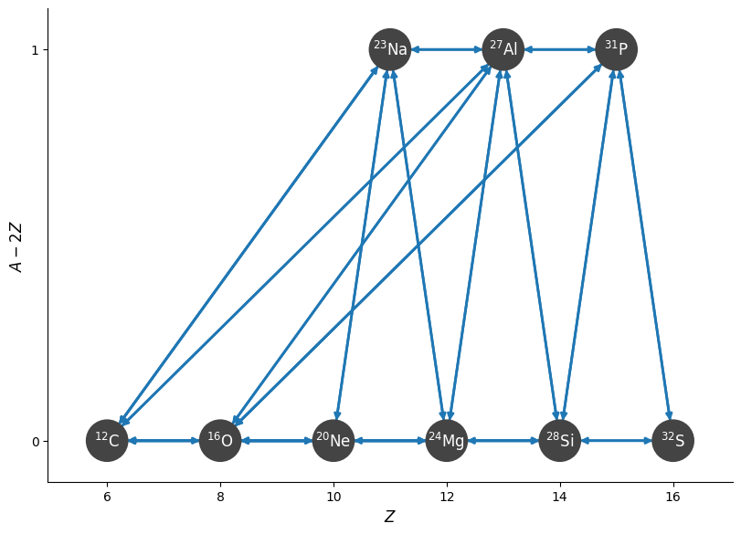
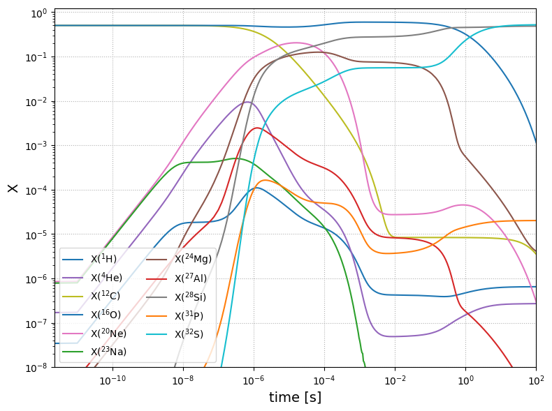
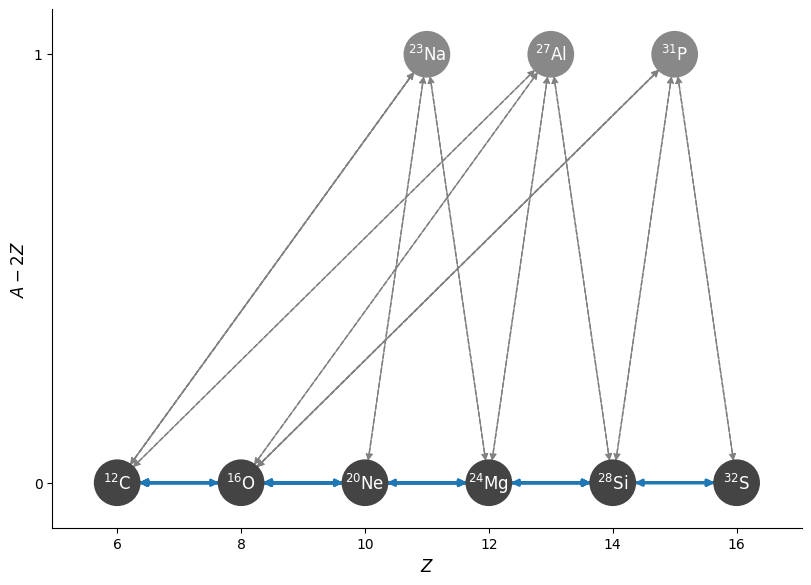
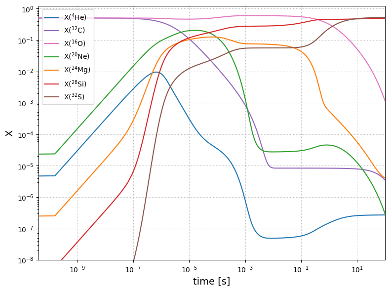
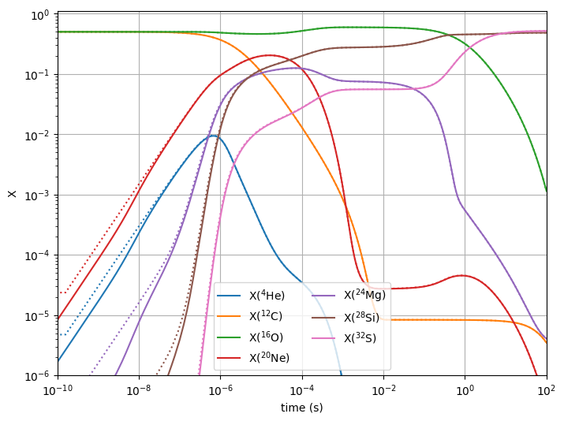

Approximating C and O Burning#
Each of the reactions C+C, C+O, and O+O have multiple branches that all follow the same pattern. These are:
in the first two of these sequences, the rate that produces a neutron is endothermic, and these rates are usually not considered. For O-burning, the rate that produces a neutron has a branching probability of 5%, and is often neglected as well.
In the “aprox”-family of networks, it is common to approximate these by removing the intermediate nucleus in the proton emission case.
For example, or carbon-burning, we want to approximate \({}^{12}\mathrm{C} + {}^{12}\mathrm{C}\) by assuming equilibriation of \({}^{23}\mathrm{Na}\). This results in the following effective rates:
\({}^{12}\mathrm{C}({}^{12}\mathrm{C},\alpha){}^{20}\mathrm{Ne}\) combining
the original \({}^{12}\mathrm{C}({}^{12}\mathrm{C},\alpha){}^{20}\mathrm{Ne}\)
the sequence: \({}^{12}\mathrm{C}({}^{12}\mathrm{C},p){}^{23}\mathrm{Na}(p,\alpha){}^{20}\mathrm{Ne}\)
\({}^{12}\mathrm{C}({}^{12}\mathrm{C},\gamma){}^{24}\mathrm{Mg}\) combining the sequence \({}^{12}\mathrm{C}({}^{12}\mathrm{C},p){}^{23}\mathrm{Na}(p,\gamma){}^{24}\mathrm{Mg}\)
\({}^{20}\mathrm{Ne}(\alpha,\gamma){}^{24}\mathrm{Mg}\) combining
the original \({}^{20}\mathrm{Ne}(\alpha,\gamma){}^{24}\mathrm{Mg}\)
the sequence: \({}^{20}\mathrm{Ne}(\alpha,p){}^{23}\mathrm{Na}(p,\alpha){}^{24}\mathrm{Mg}\)
We also need to consider the reverse rates. From the intermediate nucleus, \({}^{23}\mathrm{Na}\), we can do \({}^{23}\mathrm{Na}(p,{}^{12}\mathrm{C}){}^{12}\mathrm{C}\). This gives us 3 possible proton-captures from the intermediate nucleus that we need to account for in order to approximate out that nucleus. These 3 possible paths from the intermediate nucleus will serve as the normalization for the approximate rates.
The make_CO_approximation function manages
the C / O burning approximations.
from pynucastro.rates.aprox_family_rates import make_CO_approx_rates
import pynucastro as pyna
rl = pyna.ReacLibLibrary()
C+O burning network#
We’ll start by making a full C/O burning network, without any approximations. This will contain all the nuclei present in the 3 rates sequences above.
net = pyna.network_helper(["p", "he4", "c12", "o16",
"ne20", "mg24", "si28",
"s32", "na23", "al27", "p31"])
We’ll remove the 3-\(\alpha\) rate so we just focus on C/O burning.
r3a = net.get_rate_by_name("a(aa,g)C12")
r3a_reverse = net.get_rate_by_name("c12(g,aa)a")
net.remove_rates([r3a, r3a_reverse])
We’ll also remove the \({}^{20}\mathrm{Ne} + {}^{12}\mathrm{C}\) rates and inverses, since these are not likely to happen due to the large Coulomb barrier.
rcne = net.get_rate_by_name("ne20(c12,p)p31")
rcne2 = net.get_rate_by_name("ne20(c12,a)si28")
rcne_reverse = net.get_rate_by_name("p31(p,c12)ne20")
rcne2_reverse = net.get_rate_by_name("si28(a,c12)ne20")
net.remove_rates([rcne, rcne2, rcne_reverse, rcne2_reverse])
Now we can look at the final network
net.summary()
Network summary
---------------
explicitly carried nuclei: 11
approximated-out nuclei: 0
inert nuclei (included in carried): 0
NSE compatible? True
total number of rates: 38
rates explicitly connecting nuclei: 38
hidden rates: 0
reaclib rates: 19
starlib rates: 0
temperature tabular rates: 0
weak tabular rates: 0
approximate rates: 0
derived rates: 19
modified rates: 0
custom rates: 0
fig = net.plot(rotated=True)

Note that we left in the \((\alpha,\gamma)\) links between the odd-numbered nuclei that we will approximate out (e.g., \({}^{23}\mathrm{Na}(\alpha,\gamma){}^{27}\mathrm{Al}\)). These links will not be present in the approximate network we consider next.
Finally, we’ll write out the network and then reimport it.
We’ll integrate it, starting with a mix of half carbon / half oxygen.
rho = 1.e7
T = 3e9
comp = pyna.Composition(net.unique_nuclei)
comp.X[pyna.Nucleus("c12")] = 0.5
comp.X[pyna.Nucleus("o16")] = 0.5
Y0 = list(comp.get_molar().values())
tmax = 100.0
sol_full = net.integrate_network(tmax, rho, T, Y0, rtol=1.e-6)
/opt/hostedtoolcache/Python/3.14.4/x64/lib/python3.14/site-packages/pynucastro/rates/derived_rate.py:120: UserWarning: C12 partition function is not supported by tables: set log_pf = 0.0 by default
warnings.warn(UserWarning(f'{nuc} partition function is not supported by tables: set log_pf = 0.0 by default'))
fig = sol_full.plot_evolution(ymin=1.e-8)
/opt/hostedtoolcache/Python/3.14.4/x64/lib/python3.14/site-packages/pynucastro/networks/python_network.py:407: UserWarning: Attempt to set non-positive xlim on a log-scaled axis will be ignored.
ax.set_xlim(tmin, tmax)

An approximate network#
We’ll start off with the list of rates from the network we just created, since this already rederived the reverse rates.
rates = net.get_rates()
crates = make_CO_approx_rates(rates, "C")
corates = make_CO_approx_rates(rates, "CO")
orates = make_CO_approx_rates(rates, "O")
and let’s pull in the \({}^{12}\mathrm{C}(\alpha,\gamma){}^{16}\mathrm{O}\) and \({}^{16}\mathrm{O}(\alpha,\gamma){}^{20}\mathrm{Ne}\) rates
lib = pyna.Library(rates=rates)
c12ag = lib.get_rate_by_name("c12(a,g)o16")
c12ag_reverse = lib.get_rate_by_name("o16(g,a)c12")
o16ag = lib.get_rate_by_name("o16(a,g)ne20")
o16ag_reverse = lib.get_rate_by_name("ne20(g,a)o16")
anet = pyna.PythonNetwork(rates=crates+corates+orates+
[c12ag,c12ag_reverse,o16ag,o16ag_reverse])
anet.summary()
Network summary
---------------
explicitly carried nuclei: 7
approximated-out nuclei: 3
inert nuclei (included in carried): 0
NSE compatible? True
total number of rates: 52
rates explicitly connecting nuclei: 22
hidden rates: 30
reaclib rates: 17
starlib rates: 0
temperature tabular rates: 0
weak tabular rates: 0
approximate rates: 18
derived rates: 17
modified rates: 0
custom rates: 0
Notice that our approximate network has 4 fewer nuclei and only 22 rates directly connecting the nuclei, instead of 38.
fig = anet.plot(rotated=True)

comp = pyna.Composition(anet.unique_nuclei)
comp.X[pyna.Nucleus("c12")] = 0.5
comp.X[pyna.Nucleus("o16")] = 0.5
Y0 = list(comp.get_molar().values())
sol_approx = anet.integrate_network(tmax, rho, T, Y0, rtol=1.e-6)
/opt/hostedtoolcache/Python/3.14.4/x64/lib/python3.14/site-packages/pynucastro/rates/derived_rate.py:120: UserWarning: C12 partition function is not supported by tables: set log_pf = 0.0 by default
warnings.warn(UserWarning(f'{nuc} partition function is not supported by tables: set log_pf = 0.0 by default'))
fig2 = sol_approx.plot_evolution(ymin=1.e-8)
/opt/hostedtoolcache/Python/3.14.4/x64/lib/python3.14/site-packages/pynucastro/networks/python_network.py:407: UserWarning: Attempt to set non-positive xlim on a log-scaled axis will be ignored.
ax.set_xlim(tmin, tmax)

Comparing#
Finally, we’ll compare the two networks, by plotting them on the same axes.
import matplotlib.pyplot as plt
fig, ax = plt.subplots()
for i, nuc in enumerate(sol_approx.unique_nuclei):
ax.loglog(sol_approx.t, sol_approx.X[i, :],
linestyle=":", color=f"C{i}")
idx = sol_full.unique_nuclei.index(nuc)
ax.loglog(sol_full.t, sol_full.X[idx, :],
label=rf"X$({nuc.pretty})$",
linestyle="-", color=f"C{i}")
ax.set_ylim(1.e-6, 1.1)
ax.set_xlim(1.e-10, 100)
fig.set_size_inches((8,6))
ax.set_xlabel("time (s)")
ax.set_ylabel("X")
ax.legend(ncol=2, loc=8)
ax.grid()
